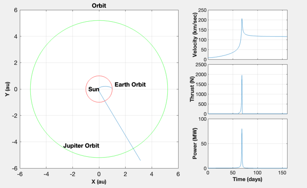

Interstellar mission simulation with a sun gravity assist.
The spacecraft is put into an elliptical orbit with a near sun perigee.
Near perigee a high-power plasma thruster performs a delta-V.
The delta-V is amplified by the sun's gravity well.
Since version 2.
------------------------------------------------------------------------
See also Constant, TextS, TitleS, XLabelS, YLabelS, RK4, RARP2A,
Period, VOrbit, FHel
------------------------------------------------------------------------
Contents
clear d; clear axis;
Elliptical transfer orbit around the sun
mu = Constant('mu sun');
aU = Constant('au');
rA = aU ;
w = 1367;
muSun = Constant('mu sun');
sigma = Constant('stefan-boltzmann constant');
rP = aU*sqrt(w/(2*sigma*1700^4));
rP = 1.1*rP;
fprintf(1, 'Perigee is %5.0f solar radii\n', rP/Constant('sun radius'));
a = RARP2A( rA, rP );
p = Period( a, mu );
v = VOrbit( rA, a, mu );
dV = 40*1000;
d.mu = mu;
d.uE = 2500*9.806;
d.solarEff = 0.3;
d.eff = 0.3;
flux = (rA/rP)^2*1358;
d.area = 30e6/(flux*d.solarEff*d.eff);
d.m0 = 1000 + 30e6/20000;
d.doDV = 0;
mI = d.m0*exp(dV/d.uE);
x = [rA;0;0;v;mI-d.m0];
dT = 8640;
p = 160*86400;
nSim = ceil(p/dT);
xPlot = zeros(3,nSim);
tPlot = zeros(1,nSim);
vPlot = zeros(1,nSim);
power = zeros(1,nSim);
thrust = zeros(1,nSim);
t = 0;
for k = 1:ceil(p/dT)
if( t/86400 > 62 )
d.doDV = 1;
end
xPlot(:,k) = [x(1:2)/rA;x(5)];
vPlot(k) = norm(x(3:4));
tPlot(k) = t;
[z,thrust(k),power(k)] = FHel( x, t, d );
x = RK4( 'FHel', x, dT, t, d );
t = t + dT;
end
tPlot = tPlot/86400;
a = linspace(0,2*pi);
xC = sin(a);
yC = cos(a);
rJupiter = 5.2;
width = 620;
height = 380;
h = NewFig('Interstellar','Position',[40 40 620 380],'NumberTitle','off');
axes('parent', h, 'position',[40/width 40/height 320/width 320/height]);
plot(xPlot(1,:),xPlot(2,:))
hold on
plot(xC,yC,'r')
plot(rJupiter*xC,rJupiter*yC,'g')
TextS(rJupiter*xC(60),rJupiter*yC(60),' Jupiter Orbit');
TextS(xC(20),yC(20),' Earth Orbit');
TextS(-0.8,0,'Sun');
XLabelS('X (au)')
YLabelS('Y (au)')
TitleS('Orbit');
grid
hold off
h1 = axes('parent', h, 'position',[420/width 260/height 160/width 100/height]);
plot(tPlot,vPlot)
axis([0 160 0 250])
set(h1,'xticklabel',' ')
YLabelS('Velocity (km/sec)')
grid
h2 = axes('parent', h,'position',[420/width 150/height 160/width 100/height]);
plot(tPlot,thrust)
axis([0 160 0 2500])
set(h2,'xticklabel',' ')
YLabelS('Thrust (N)')
grid
h3 = axes('parent', h, 'position',[420/width 40/height 160/width 100/height]);
plot(tPlot,power/1e6)
axis([0 160 0 100])
XLabelS('Time (days)')
YLabelS('Power (MW)')
grid
vPlot(end)
Perigee is 9 solar radii
ans =
115.36
